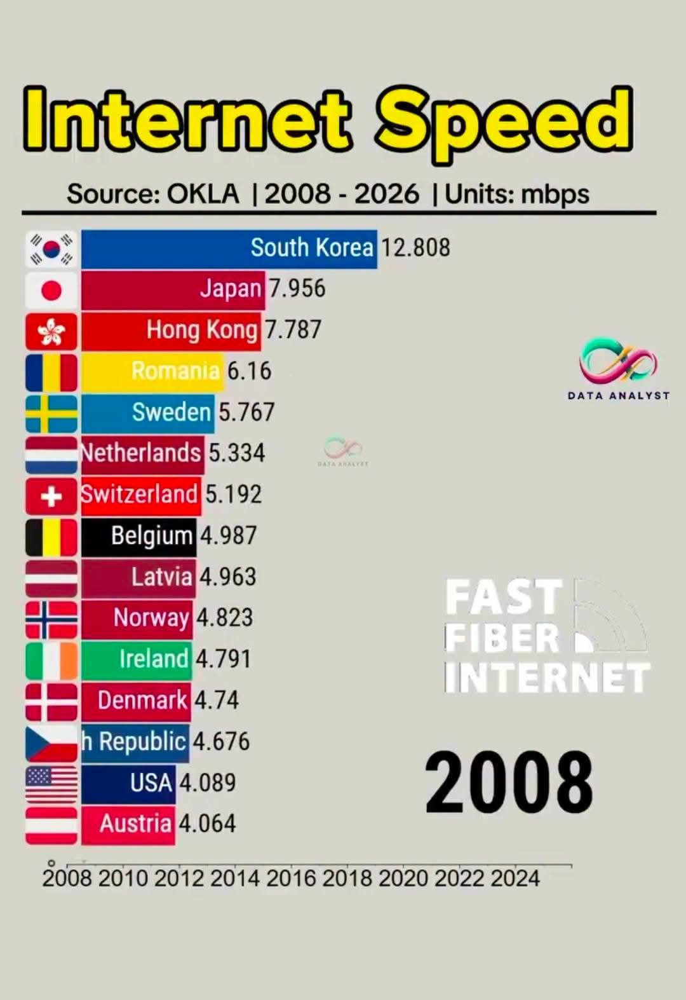
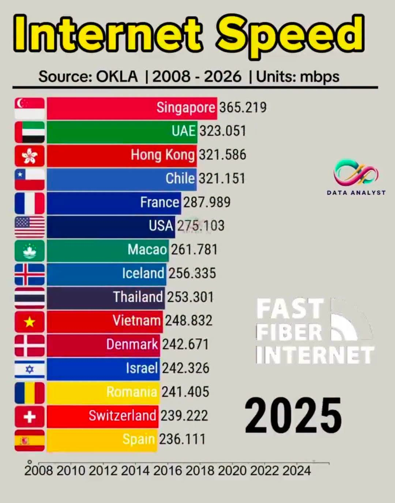

뭐여 무뇌한 드립친건줄 알았는데 진짜 바보였구나
뭐 뇌가없는한량이라고 해석하면 말이 안되는건 아님 ㅋㅋㅋㅋ
그냥 발전할 때가 있는거지
이제 막 초고속 인터넷 보급할때 잘 맞아서 우리가 1등이었고 우린 이미 다 깔았는데 후발주자들이 다음 기슬로 바꿔나가서 또 상위권 차지 하는거지머
단순함
보면 알겠지만 08년이랑 26년 둘다 등장하는건 스위스, 루마니아, 홍콩밖에 없음. 우리는 4G때 지금 인터넷 속도로 꽤 빠르게 한번 갈아엎은거고 나머지는 5G로 좀 늦게 갈아엎은거고. 그차이임.
솔직히 AI혁명으로 그만한 수요가 나올 지금 또 한번 다들 갈아엎어야 할텐데 지금 위에 있는놈들이 고통받는쪽에 속할거라 봄.
덴마크 usa는 내눈에만 보이냐?
저건 유선인터넷속도임.. 무선 4g 5g가 아님
시발 아이슬란드한태도 따잇 당한
지하철 제일 먼저 도입한 서유럽이 지금 노후된
시설이나 썪어가는 냄새 등등 못갈아 엎는거랑
별반 다를거 없는거지
후발주자들 처럼 신식으로 다 뜯어 고치려면
천문학적인 금액이 투입돼야 할테니까
근데 일단 표가 정상이 아닌데?
08년 세계 1위 라는 한국 인터넷이 왜 12.8mbps 밖에 안되고
25년 세계 1위는 365.2mbps 밖에 안됨
다들 1Gbps 인터넷 쓴지 오래되지 않음?
평균이라 그런듯 ㅇㅇ 위에 댓글에서 높은애들 보면 낮은 요금제가 없다고 해서 봤더니 그러네, 미국도 at&t 300부터 시작이넹...
08년이면 그럴수있다 생각함
근데 25년 1위가 365인건 이상한거같음
난 아직도 100mbps 씀. 큰 용량 받는 일 잘 없고 그냥 회선 자체가 안정적이라 업/다운 100가까이 다 찍어줘서 큰 불편 없어서 넘어갈 이유를 못 느껴서
모바일인가 하고 보긴 했는데
?? 2008년이면 맞지 100메가 쓰는 사람이 드물던 시절인데 대부분 10메가 썼지 우리집도 100메가로 바꾼건 2010년대 들어서 바꾼걸로 기억하는데
90년대 후반 adsl 나오면서 다운로드 속도 100kB/s정도, 2000년대에 vdsl 나오면서 다운로드 속도 1MB/s정도 뜨면서 엄청 신기했던걸로 기억하는데
지역차가 있는건가 내 기억엔 08년 이전에도 FTTH 설치해서 잘 썼고 (시골 다세대주택) 비대칭이라 문제였지 VDSL도 그전부터 100Mbps 서비스 다 하고 있었음
저렇게 빨라져봐야 체감안됨, 오히려 2000년대에 속도빠른게 훨씬크게 체감됨
이거 맨날 선동 자료로 올라오는데 오클라 측정 방식 자체가 엉터리임
동일한 장비와 요금제로 국가별 통신망을 비교하는 방식이 아니라 이용자가 자발적으로 실행한 속도 테스트에서 가까운 측정 서버까지의 통신 속도를 수집하는 방식
당연히 서버가 없는 나라에선 느리게 나오고 한 명이 테스트를 했으면 한 명분의 결과만 반영됨
님 엄마가 싼거 써서 그런거아님?
ㅁㅊ ㅋㅋㅋㅋㅋ
엄마없노
그거드립이아니라 진짜다.
돈덜내고 싼인터넷써놓고 순위평균대부분 떨궈먹는게대부분
LTE나 5G가 중계기에서 유선 인터넷망으로, 가정이나 회사의 일반 광통신 인터넷 망과 대역폭을 공유함.
LTE와 5G 사용이 증가함에 따라 기존 통신망이 포화되기 시작했고 투자없이 속도를 늘리기 힘들어짐.
솔직히 사람들이 유선인터넷에 월 몇천원 더 내고 기가비트를 쓸 이유를 못느껴서 그런거임.. 아직 100mbps 쓰는 가정 많을걸?
100mbps 상품의 가격대비 속도로 가성비가 제일 낮음에도 불구하고 전세계로 가성비 따지면 대한민국이 세계 최고일거임.
하긴 나도 요새 엪겜 안하니 비싼거 필요가 없더라
그래서 저기 랭킹중에 it분야에서 큰소리 땅땅치는 나라 미국말고 또 뭐있음?
저거로 it강국이라 하는게 오히려 진짜 딸딸이잡는거지 ㅋㅋㅋㅋㅋㅋㅋㅋㅋ
국토도 비좁은데 당시에 정부가 대놓고 밀어줬으니 저게가능했지
외국 나가면 느끼지만 5G, lte 망 속도랑 커버리지 개판이던데? 요즘같은 모바일 시대에는 이게 더 중요하지 싶다
지금 미국인데 커버리지 너무 씹창임..
잘되는곳은 잘되는데 안터지는곳은 먹통수준ㅜ
한국처럼 꾸준히 잘터지는곳 드물닷
아직 구축이 많은 울 나라에서 1긱 못들여오는 구축이 넘 많음
???: 통신사가 돈을 많이 벌면 틀림없이 요금을 내릴겁니다
이거자료 엉터리이고 okla부터가 이미잘알려진 speedtest.net자료기준인데?
이자료 자체가 올리는놈이 선동인데 안지겹나?
매번 또올라오고 똑같은거또올라오고
이거 자료 믿는새끼들 빡대가리 존내많음
이미 진실은아는놈은 위에 미국 얘기하는놈이 사실인데. 특히 미국에서 인방키는사람들 보면 진작 답 나오던얘기.
저거 속도평균치 보급률 , 속도 조회수에서 대부분 떨궈먹는거 아무도모르더라 근데 실제성능이랑 하나도 관련없음. 거의 적은이용자 벤치딸딸이가까움. 하다못해 2년전에 말레이시아 랑 싱가폴갈때 기준으로말해준다. 좆개소리임 저자료가
다른나라가도 여기처럼 커버리지 또 존내잘되는나라없던거도사실인데 저 벤치자료마저도 유선기준이지 무선기준망 자료는 또 보니 한국은 4위라는거 아무도 안말함
2000년에 11조 써서 ADSL 깐 다음에 유선관련 투자가 멈춤
요즘 나라에서 무선, 5G 뭐 그런것만 지원해줘서리
사실 유선관련 투자할게더이상없음.
그냥 나라전체가 광랜미친듯이깔려서 사용자가 돈만내면 어디든지 기가랜부터 10기가랜 광랜매설 어지간한깡촌 다깔려있어서 바로개통됨
막말로 한국은 가는곳마다 광랜매설지역 , 전봇대마다 통신장비 광모뎀망 마저도 ftth장치들 대부분 최신형 다깔려있는거 바로확인가능함.
유선은 어차피 사용자들이 100메가 말곤 더비싼요금제 를 별로안선호하는게대부분인거.
KT 기준 1기가 까지는 대부분 지역 개통은 되나
2.5G, 5G, 10G는 아직 되는곳이 별도로 있음
서울 인데도 안되는 곳 많더라
오히력그거 서울이라서 안되는곳많음.지방신도시는 진짜 오히려잘개통되더랴
부럽다..
미국은 스타링크 쓰거나 나름 인구 밀집지역이라 고속 인터넷 들어오는곳 아니면
씹창이던데
옛날에는 다운받는데 한세월이라 인터넷 좋은거 쓰려고 했던건데 요즘은 효용이 거의 안느껴져서 관심이 없어졌지
유선은 반기가 쓰는데 모바일은 lte씀;; 알뜰폰 가성비가 워낙좋아서..
kt가 유선품질은 좋긴한데 qos 좆같아서 skb 쓰고있음
뭔 씨발 베트남한테 따잇 ㅋㅋㅋ 통신사새끼들 죄다 찢어놔라 걍
mbps 기준이면 우리집은 900mbps 정도 나옴
실제 저 나라 가면 저 속도 안 나올 걸 ㅋㅋㅋㅋ
시발 통신사 새끼들 사기치는 건 전 세계 공통일 거야
싱가폴처럼 우리나라같이 작은 나라는 모르겠으나
다른 큰 나라는 대도시 가도 우리처럼 터지지는 않는 듯
100mb써도 충분해서. 그리고 어느정도 속도 이상 나오면 초당 속도보다, 지연시간 적은게 훨씬 쾌적함. 그게 100메가면 충분하던데 난
어짜피 인터넷 속도를 사람이 정보처리능력이 못따라감
저거 속도 빨라지는 투자할바에 다른 투자를 하는게 이득이란거지
KT 500M 사용중인데 순위권에도 없네
근데 한국은 인터넷요금이 ㅈㄴ 싸니까 뭐 그럴수도있다고생각함
2.5, 5, 혹은ㅍ10기가 인터넷 쓰는 사람 있음?
아하 오케이😄